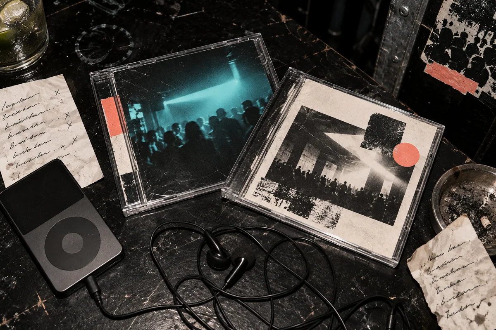

Spotify playlists
The best Spotify playlists worth following
Twelve playlists with an identifiable point of view, arranged by what they help you hear rather than how many followers they have.
A playlist should reveal a listener.
Spotify already knows how to give you more of what you played yesterday. That is useful, but it is not the only job a playlist can do. A good curator can make a leap the recommendation feed would avoid, put a small record beside a famous one, or hold one scene in focus long enough for its details to emerge.
This list favours playlists with a person, station, publication or label behind them. Some update every week. Others are long, unruly archives that become more useful as they grow. Human choices are not automatically better, but you can hear the argument behind them.

How these playlists were chosen.
Each playlist needed a clear musical job, an identifiable curator and either current activity or durable archival value. A huge follower count was not enough. A small playlist was not rewarded merely for being obscure. I also rejected lists that existed mainly to sell submissions or could not explain what made one selection different from the next.
The order is practical rather than numerical. Start with the first section if you want a steady feed of new releases across genres. Go to the second if you want electronic and dance music with sharper scene boundaries. If none of these works, how to find new music covers radio, labels, DJ sets, databases and other routes that do not begin inside Spotify.
Best Spotify playlists for finding new music.
KEXP
New This Week
KEXP is a Seattle listener-supported station with decades of practice turning a broadcast schedule into a point of view. New This Week is the useful compressed version: recent records crossing indie rock, soul, hip-hop, electronic music and whatever else has entered the station's rotation. Use it when you want one current list without surrendering the choice to a personalised feed.
Open full playlist on Spotify ↗Pitchfork
Pitchfork's Best New Music
This is a playlist with a strict relationship to a publication. Tracks arrive because Pitchfork has placed the corresponding release inside its Best New Music coverage, so the selection is narrower than a generic new-release feed and easier to interrogate. You may disagree with the reviews, but you know why a record is there.
Open full playlist on Spotify ↗Pigeons & Planes
Pigeons & Planes
Pigeons & Planes built its reputation on catching artists between a first upload and a wider audience. Its playlist still works best in that middle distance. Hip-hop and alternative pop provide the centre, but the useful entries are often the ones that do not sit cleanly inside either category.
Open full playlist on Spotify ↗GemsOnVHS
GemsOnVHS Monthly Playlist
GemsOnVHS is known for filming country, folk and roots musicians in plain rooms, porches and fields rather than treating discovery as a stream of release-day assets. The monthly playlist carries that taste into Spotify. It is the outlier here, and a good reset after several hours of electronic music or chart-facing new releases.
Open full playlist on Spotify ↗Best electronic and dance Spotify playlists.
thecatrave
Rare Electronic Music
I curate this one, so the conflict is stated up front. Rare Electronic Music is the broadest version of thecatrave's club taste: breaks, techno, leftfield house, hard turns and records heard at raves that do not fit one clean genre shelf. The opening run currently moves from FUCK!LACRÈME to Skin On Skin and ATRIP. It earns a place here for the same reason as the artist lists below: the selections belong to a recognisable listening history rather than a mood keyword.
Curated by thecatraveOpen full playlist on Spotify ↗thecatrave
Emotional Electronic Music
The second thecatrave playlist has a narrower test. Melody and emotional weight matter, but the tracks still need enough physical movement to survive outside headphones. Patrick Holland, Public Memory and a KETTAMA mix lead the current version; later entries move through liquid drum and bass, Skream, dBridge and softer club records without turning into background music.
Curated by thecatraveOpen full playlist on Spotify ↗Bicep
Feel My Bicep
Bicep began Feel My Bicep as a music blog before the duo's own records filled festival stages. The playlist preserves that collector's instinct. House and techno are the centre of gravity, but old records, new releases and odd rhythmic connections are allowed to sit together. It is more useful as a window into what the duo are carrying than as a summary of Bicep's own sound.
Open full playlist on Spotify ↗Four Tet
Four Tet's symbol-titled playlist
The title is a thicket of planets, circles and symbols, so searching by Four Tet's profile is easier than typing it. The playlist itself is even less interested in neat labelling. It is a very long public notebook spanning club music, jazz, folk, rap, pop and records that make sense only because Kieran Hebden placed them next to something else. Do not try to finish it. Drop into a different stretch each time.
Open full playlist on Spotify ↗Spotify
Altar
Altar is Spotify editorial, the one exception to the human-curator rule on this list. It is one of the platform's clearer electronic propositions: contemporary club music that sits outside the mainstage EDM lane, with alternative pop and experimental production allowed into the room. Use it as a current snapshot, not an archive.
Open full playlist on Spotify ↗Toolroom Records
Toolroom Tech House
Toolroom's playlist does exactly what a label-led list should do. It stays close to the records the label understands: functional house, rolling basslines and tracks designed for a busy room. It will not explain the whole of house music, but it makes a reliable weekly check on one working part of it.
Open full playlist on Spotify ↗Danny L Harle
Danny L Harle's HUGE PLAYLIST
Danny L Harle's selection connects maximal pop writing to trance, hardcore, happy-hardcore velocity and internet-era mutations of all three. It is the fastest and most deliberately excessive playlist in this article. The sequencing can be ridiculous, but it is ridiculous with a producer's ear for chords, hooks and acceleration.
Open full playlist on Spotify ↗UKF
UKF Drum & Bass
UKF has documented drum and bass online since 2009, long enough for its playlist to function as both a release feed and a map of the scene's accessible centre. It leans toward current, polished production rather than the full historical range. Pair it with the drum and bass guide when you want the records, labels and breaks behind that present-day surface.
Open full playlist on Spotify ↗Which Spotify playlist should you choose?
Start with the curator, not the follower count. A station playlist is useful when you want a changing release feed. A publication list lets you connect songs to reviews. An artist playlist exposes influences and records carried into DJ sets. A label playlist stays narrower, but that narrowness is the point.
Save one list that updates often and one long archive that does not need to. The first keeps you current; the second lets you enter somewhere other than the top. If you want an hour with an actual sequence rather than a list on shuffle, go to live DJ sets or let the Selector choose a set at random.
| Playlist | Curator | Best for |
|---|---|---|
| New This Week ↗ | KEXP | A broad current release feed |
| Pitchfork's Best New Music ↗ | Pitchfork | Music tied to published reviews |
| Pigeons & Planes ↗ | Pigeons & Planes | Emerging hip-hop and alternative pop |
| GemsOnVHS Monthly ↗ | GemsOnVHS | Country, folk and roots discoveries |
| Rare Electronic Music ↗ | thecatrave | Breaks, techno and leftfield club music |
| Emotional Electronic Music ↗ | thecatrave | Melodic club music with weight |
| Feel My Bicep ↗ | Bicep | A working dance-music record bag |
| Four Tet's playlist ↗ | Four Tet | A deep, genre-resistant archive |
| Altar ↗ | Spotify | Current alternative electronic music |
| Toolroom Tech House ↗ | Toolroom Records | Focused weekly tech house |
| Danny L Harle's HUGE PLAYLIST ↗ | Danny L Harle | Trance, hardcore and maximal pop |
| UKF Drum & Bass ↗ | UKF | Current accessible drum and bass |
For scene context, continue with the guides to bass music, UK garage, dubstep and drum and bass.
Spotify playlist FAQ.
What are some good playlists on Spotify right now?
Good playlists on Spotify have a clear job. For broad new music, start with KEXP New This Week, Pitchfork's Best New Music or Pigeons & Planes. For electronic music, try Feel My Bicep, Four Tet's long symbol-titled playlist, Altar, Toolroom Tech House, UKF Drum & Bass, or the two thecatrave playlists on this page.
What is the best playlist on Spotify for finding new music?
KEXP New This Week is the strongest general starting point because it turns the current rotation of an independent radio station into a playable list. Pitchfork is better if you want reviews attached to the choices. Pigeons & Planes is stronger for emerging hip-hop and alternative pop.
What are the top playlists on Spotify for electronic music?
Rare Electronic Music and Emotional Electronic Music reflect thecatrave's own listening, Feel My Bicep and Four Tet provide artist-led routes, and Altar, Toolroom Tech House and UKF Drum & Bass cover more defined scenes. Danny L Harle's HUGE PLAYLIST is the maximal, genre-colliding option.
Are popular Spotify playlists always the best ones?
No. Follower count can show reach, but it cannot tell you whether the sequence has a point of view or fits what you want to hear. Independent playlists often reveal a more specific taste, while Spotify editorial lists usually update reliably and cover a scene at greater scale.
Where can I find Spotify playlist recommendations with a human point of view?
Start with radio stations, music publications, artists and labels whose taste you already trust, then follow the curator rather than a generic mood term. The Spotify playlist recommendations on this page were selected for an identifiable curator, a clear musical lane and either active updates or durable archival value.
Sources.
- Spotify: Discovery-Driven Playlists
- British GQ: The best Spotify playlists to escape the AI algorithm
- Audiohype: The Best Spotify Playlists in 2026
- RouteNote: Top 10 most followed playlists on Spotify 2026
- All twelve Spotify playlist pages were checked directly on 21 September 2026.
Continue reading
Read next.
 Digging~14 min read
Digging~14 min readBest Boiler Room Sets of All Time, Ranked and Measured
Eighteen sets picked for what happens in them, beside the ten most-watched, counted across 8,206 Boiler Room recordings.
Read article → Digging~10 min read
Digging~10 min readHow to Find New Music: 10 Ways That Are Not an Algorithm
Ten ways to hear something you have not heard before, from community radio to record credits, ordered by how much work they take.
Read article → Music history~16 min read
Music history~16 min readWhat Is UK Garage? The Sound, 2-Step, Speed Garage and Bassline
London played an American record too fast until the beat broke. The branches it split into, and the numbers behind its revival.
Read article → Festivals~13 min read
Festivals~13 min readWhat Is Burning Man? The Event, the City and the Music
A participant-built city in the Nevada desert, with no central lineup or main stage, and the sound camps and art cars that programme their own music.
Read article →